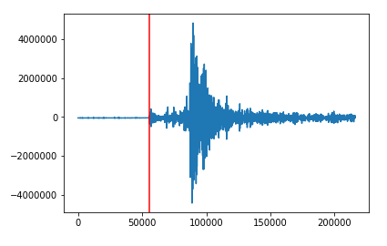

pycheron.sigpro.triggerOnset¶
-
triggerOnset(x, picker, threshold=None, index=False)[source]¶ Uses vector returned by STALTA “first break picking” method and a user selected threshold to determine the arrival time of a seismic event.
Parameters: - x (obspy.core.trace.Trace) – obspy trace object
- picker (numpy.array) – Results from applying the STALTA method to this trace
- threshold (float) – Optional numeric value of the threshold at which triggering should occur. Note the appropriate value for the threshold will depend upon the exact STA/LTA algorithm used and the noise level in the signal.
- index (bool) – Optional boolean to return the index (rather than the time) of event onset.
Returns: Returns a single value identifying the onset of the seismic event or None if nothing is detected. The returned value will be a time by default, or a numeric index if index = True.
Return type: float or None
Method simply identifies the point at which the picker first rises above the threshold, e.g., only returns the first time point or None at which STALTA is above threshold. It does not implement the full functionality found in obspy method of the same name as is not currently needed at this point, but maybe a TODO later: (http://docs.obspy.org/packages/autogen/obspy.signal.trigger.triggerOnset.html)
When no threshold is supplied, an appropriate value is calculated from the picker with:
threshold = scipy.stats.mstats.quantile(picker, 0.999)Example
from obspy.clients.fdsn import Client from obspy import UTCDateTime from pycheron.sigpro.STALTA import STALTA from pycheron.sigpro.triggerOnset import triggerOnset # Instantiate client object client = Client("IRIS") # Grab data from 2010-02-27 06:00:00 to 2010-02-27 09:00:00 t = UTCDateTime("2010-02-27T06:00:00.000") st = client.get_waveforms("IU","ANMO","00","BHZ",t,t+180*60) tr = st[0] picker = STALTA(tr,3,30)
Plotting
import matplotlib.pyplot as plt # Using results from above example plt.plot(tr) plt.axvline(x=to,color = 'red')